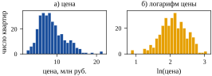
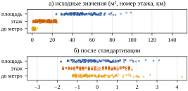
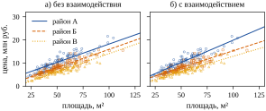

2 Данные и признаки
В гл. 1 обучающая выборка представлена готовой матрицей чисел \mathbf{F}. На практике данные приходят в виде таблицы, где есть пропуски, текстовые значения и признаки в несопоставимых единицах. В этой главе показано, как превратить такую таблицу в матрицу объекты–признаки и не допустить при этом утечки данных — ошибки, из-за которой оценка качества модели оказывается завышенной, а на новых данных модель работает заметно хуже.
2.1 Таблица данных
Сквозной пример главы — оценка стоимости квартир. Объект — квартира, ответ — цена в миллионах рублей, задача — регрессия. Фрагмент выборки приведён в табл. 2.1; данные условные.
| № | Площадь, м² | Район | Этаж | Год постройки | Цена, млн руб. |
|---|---|---|---|---|---|
| 1 | 34 | А | 3 | 1975 | 6,1 |
| 2 | 52 | Б | 9 | 2012 | 9,0 |
| 3 | 41 | В | 1 | 1968 | 5,2 |
| 4 | 75 | А | 5 | нет данных | 14,8 |
| 5 | 63 | Б | 12 | 2019 | 11,3 |
| 6 | 47 | В | 4 | 2005 | 6,9 |
Строки таблицы — объекты, столбцы — признаки и ответ. Площадь, этаж и год — количественные признаки, район — номинальный, а для квартиры № 4 год постройки неизвестен. Прежде чем строить модель, нужно заполнить пропуск, превратить районы в числа и привести признаки к сопоставимому масштабу. Но сначала данные нужно изучить.
2.2 Разведочный анализ
Разведочный анализ данных — это знакомство с таблицей до построения модели. Обычно проверяют:
- типы и диапазоны признаков: нет ли отрицательной площади или этажа 250;
- распределения: симметричны ли они, есть ли выбросы;
- долю пропусков в каждом столбце;
- связи признаков с ответом и между собой;
- в задачах классификации — соотношение классов: если положительных объектов 1 %, модель, которая всегда отвечает «отрицательный», будет права в 99 % случаев.
Распределение цены квартир (рис. 2.1, а) несимметрично: большинство квартир стоит 5–10 млн руб., но есть длинный «хвост» дорогих. Так обычно распределены величины, которые получаются произведением многих множителей: цены, доходы, время выполнения задач. Если вместо цены предсказывать её логарифм, распределение становится почти симметричным (рис. 2.1, б), а модель меньше подстраивается под редкие дорогие квартиры. Прогноз цены получают обратным преобразованием e^{\hat y}.

Силу линейной связи двух признаков (или признака и ответа) измеряет коэффициент корреляции Пирсона. Для значений u_i и v_i на \ell объектах
r = \frac{\sum\limits_{i=1}^{\ell} (u_i - \bar u)(v_i - \bar v)}{\sqrt{\sum\limits_{i=1}^{\ell} (u_i - \bar u)^2 \, \sum\limits_{i=1}^{\ell} (v_i - \bar v)^2}},
где \bar u и \bar v — средние значения.
Читаем формулу. В числителе для каждого объекта перемножаются отклонения двух величин от их средних. Если обе величины одновременно выше среднего или одновременно ниже, произведение положительно; если одна выше, а другая ниже — отрицательно. Сумма показывает, какое поведение преобладает. Знаменатель нормирует результат так, что -1 \le r \le 1: r = 1 — точная возрастающая линейная зависимость, r = -1 — убывающая, r \approx 0 — линейной связи нет (но нелинейная может быть). Сильно коррелированные между собой признаки — повод насторожиться: они несут почти одну и ту же информацию, модели трудно разделить между ними вклад в ответ, и её веса становятся неустойчивыми. И наконец, корреляция говорит о связи, а не о причине. Например, в задаче из гл. 1 число найденных в модуле ошибок связано с числом тестов для него: чем больше тестов, тем больше ошибок находят. Но если удалить тесты, ошибок в модуле не станет меньше — их просто перестанут находить.
2.3 Пропуски
Пропуски возникают, когда данные не собрали, потеряли или они не существуют (у нового дома нет истории ремонтов). Основные способы с ними справиться:
- удалить объекты с пропусками — допустимо, если их мало, но если пропуски не случайны (например, год постройки неизвестен в основном у старых домов), выборка станет смещённой;
- удалить признак, если пропусков в нём большинство;
- заполнить пропуск средним, медианой или (для номинальных признаков) самым частым значением. Медиана устойчивее к выбросам: в табл. 2.1 медиана известных годов равна 2005, ею и заполняется пропуск у квартиры № 4;
- добавить бинарный признак «значение было пропущено». Сам факт пропуска бывает информативен: если продавец не указал год постройки, это может что-то говорить о доме.
Среднее и медиана для заполнения вычисляются по обучающей выборке; почему это важно, объяснено в разд. «Утечки данных».
2.4 Категориальные признаки
Линейная модель умеет только умножать признаки на веса и складывать, поэтому номинальный признак «район» нужно превратить в числа. Закодировать районы числами 1, 2, 3 нельзя: модель решит, что район В «вдвое дальше» от А, чем Б, и что влияние района на цену меняется равными шагами. Порядка и расстояний между районами нет, а кодирование их навязывает.
Правильный способ — прямое кодирование (one-hot): каждому значению признака соответствует свой бинарный признак, равный 1, если объект имеет это значение, и 0 иначе:
f_{\text{А}}(x) = [\text{район}(x) = \text{А}], \quad f_{\text{Б}}(x) = [\text{район}(x) = \text{Б}], \quad f_{\text{В}}(x) = [\text{район}(x) = \text{В}].
У каждой квартиры ровно один из трёх признаков равен единице, поэтому их сумма всегда равна 1 — так же, как фиктивный признак f_0. Значит, столбцы матрицы \mathbf{F} линейно зависимы, и веса линейной модели определяются неоднозначно: если прибавить к \theta_0 любое число и вычесть его из весов всех трёх районов, прогнозы не изменятся. Поэтому один из столбцов, например f_{\text{А}}, удаляют. Район А становится базовым: свободный член \theta_0 относится к нему, а веса \theta_{\text{Б}} и \theta_{\text{В}} показывают, на сколько цена в районах Б и В отличается от А при прочих равных.
Порядковые признаки (приоритет «низкий», «средний», «высокий») можно кодировать числами 1, 2, 3 — порядок у них есть. Но и здесь числа предполагают равные шаги между уровнями; если это сомнительно, используют прямое кодирование.
Если значений у признака много (улица, автор коммита), прямое кодирование порождает тысячи столбцов. Тогда, например, заменяют значение средним ответом по объектам с этим значением: улицу — средней ценой квартиры на ней. Такое кодирование средним удобно, но опасно утечкой: если среднее посчитано с участием самого объекта, в признак попадает его собственный ответ.
2.5 Масштабирование
Признаки измеряются в разных единицах и принимают значения разного порядка: площадь — десятки квадратных метров, расстояние до метро — километры, а этаж — просто номер (рис. 2.2, а). Для самой линейной модели это не проблема: веса подстроятся под единицы измерения. Но разный масштаб признаков замедляет итерационные методы поиска параметров, искажает действие штрафа за большие веса, одинакового для всех признаков (гл. 6), и делает расстояние между объектами зависящим в основном от признака с самыми большими числами. Расстояние используют методы, которые относят объект к тому же классу, что и наиболее похожие на него объекты выборки (например, метод ближайших соседей). Для них разница площадей в 20 м² вносит в расстояние вчетверо больший вклад, чем разница расстояний до метро в 4,5 км, хотя на цену второе может влиять сильнее. Поэтому признаки приводят к общему масштабу.

Стандартизация вычитает из признака среднее и делит на стандартное отклонение:
x'_{ij} = \frac{x_{ij} - m_j}{\sigma_j}, \quad m_j = \frac{1}{\ell} \sum_{i=1}^{\ell} x_{ij}, \quad \sigma_j = \sqrt{\frac{1}{\ell} \sum_{i=1}^{\ell} (x_{ij} - m_j)^2}.
Читаем формулу. Число m_j — среднее значение j-го признака по выборке, \sigma_j — его типичное отклонение от среднего. Новое значение x'_{ij} говорит, на сколько «типичных отклонений» объект выше или ниже среднего. После стандартизации у каждого признака среднее 0 и стандартное отклонение 1 (рис. 2.2, б), а единицы измерения исчезают. Для площадей из табл. 2.1 m = 52 м², \sigma \approx 13{,}7 м², и квартира площадью 75 м² получает значение (75 - 52)/13{,}7 \approx 1{,}68.
Минимаксная нормализация x'_{ij} = (x_{ij} - \min_i x_{ij}) / (\max_i x_{ij} - \min_i x_{ij}) переводит значения в отрезок [0, 1]. Она проще, но один выброс сжимает все остальные значения к краю отрезка.
2.6 Конструирование признаков
Линейная модель линейна по параметрам, но не обязана быть линейной по исходным данным: признаки f_j(x) могут быть любыми функциями объекта. Так линейной моделью описывают нелинейные зависимости:
- степени признака: f_1(x) = x, f_2(x) = x^2, … — так строится полиномиальная регрессия;
- логарифм для величин с длинным «хвостом» распределения;
- составляющие даты: день недели, месяц, праздник; для временных рядов — значения той же величины за прошлые периоды;
- агрегаты: средняя цена квартир в районе; в задаче из гл. 1 — число изменений модуля программы за последний месяц.
Особый случай — взаимодействие признаков. Цена квартиры примерно пропорциональна площади, но цена квадратного метра в разных районах разная. Модель
g(x, \boldsymbol{\theta}) = \theta_0 + \theta_{\text{Б}} f_{\text{Б}}(x) + \theta_{\text{В}} f_{\text{В}}(x) + \theta_1 \cdot \text{площадь}(x)
допускает для района только сдвиг: прямые цены от площади в трёх районах параллельны (рис. 2.3, а). Чтобы наклон стал своим в каждом районе, добавляют произведения площади на индикаторы районов, \text{площадь}(x) \cdot f_k(x) для k \in \{\text{А}, \text{Б}, \text{В}\} (а общий признак «площадь» убирают — он равен сумме этих произведений). Вес при таком признаке — цена квадратного метра в районе k (рис. 2.3, б). Умножать площадь на номер района, закодированный числом, бессмысленно: получится признак, который растёт с «номером» района, а не отражает цену метра.

Удачный новый признак нередко улучшает модель сильнее, чем смена метода обучения; придумать его помогает знание предметной области.
2.7 Утечки данных
Чтобы узнать, как модель будет работать на новых объектах, часть выборки откладывают и при обучении не используют. Модель обучают на обучающей выборке, а качество оценивают на тестовой — объектах, которых модель не видела.
Утечка данных — попадание в обучение информации, которой не будет в момент применения модели. Из-за утечки качество на тестовой выборке оказывается высоким, а на действительно новых данных модель работает заметно хуже. Типичные источники утечки:
- признак вычислен по событиям, которые происходят позже прогноза. В задаче из гл. 1 модель до выхода новой версии программы предсказывает, найдут ли ошибки в модуле. Признак «число исправлений, внесённых в модуль за месяц после выхода версии» в момент прогноза ещё неизвестен и, по сути, содержит сам ответ;
- статистики предобработки посчитаны по всем данным. Если среднее и стандартное отклонение для стандартизации, медиана для пропусков или кодирование средним вычислены до разбиения выборки на обучающую и тестовую, в обучение проникает информация о тестовых объектах;
- один и тот же объект (дубликат) попал в обе части выборки;
- для данных, упорядоченных во времени, модель обучена на более поздних данных, чем тестовые, то есть «знает будущее».
Чтобы статистики предобработки не несли информацию о тестовых
объектах, всё, что вычисляется по данным (средние, медианы, список
значений категорий, коды), вычисляют только по обучающей выборке. К
тестовой выборке и к новым данным применяют уже вычисленные значения и
не пересчитывают их. В библиотеке scikit-learn у преобразований два
метода: fit вычисляет статистики, transform
применяет их. Конвейер (Pipeline) объединяет преобразования
и модель так, что fit вызывается только на обучающих данных
(листинг 2.1) [2, 3]. Тот же принцип — одинаковые преобразования при
обучении и применении — описан как шаблон проектирования систем
машинного обучения [4, 5].
Листинг 2.1. Конвейер предобработки и линейной регрессии
from sklearn.compose import make_column_transformer
from sklearn.impute import SimpleImputer
from sklearn.linear_model import LinearRegression
from sklearn.pipeline import make_pipeline
from sklearn.preprocessing import OneHotEncoder
from sklearn.preprocessing import StandardScaler
num = make_pipeline(SimpleImputer(strategy="median"),
StandardScaler())
prep = make_column_transformer(
(num, ["площадь", "этаж", "год"]),
(OneHotEncoder(drop="first"), ["район"]))
model = make_pipeline(prep, LinearRegression())
# статистики вычисляются только по обучающей части
model.fit(X_train, y_train)
y_pred = model.predict(X_test)Вопросы для самоконтроля
- Почему номинальный признак нельзя кодировать числами 1, 2, 3?
- Зачем при прямом кодировании удаляют один из столбцов?
- Чем стандартизация отличается от минимаксной нормализации? Когда предпочтительнее каждая?
- Как с помощью признаков описать нелинейную зависимость линейной моделью?
- Назовите источники утечки данных. Как конвейер scikit-learn защищает от одного из них?
Задачи
Запишите матрицу \mathbf{F} для табл. 2.1: заполните пропуск медианой, закодируйте район прямым кодированием с базовым районом А, добавьте фиктивный признак.
Ответ
шесть строк вида (1, \text{площадь}, f_{\text{Б}}, f_{\text{В}}, \text{этаж}, \text{год}); у квартиры № 4 год равен 2005.
Стандартизуйте площади из табл. 2.1.
Ответ
m = 52, \sigma \approx 13{,}66; стандартизованные площади квартир № 1–6: -1{,}32; 0; -0{,}81; 1{,}68; 0{,}81; -0{,}37.
Код к главе — ноутбук ch02_data.ipynb · открыть в Colab